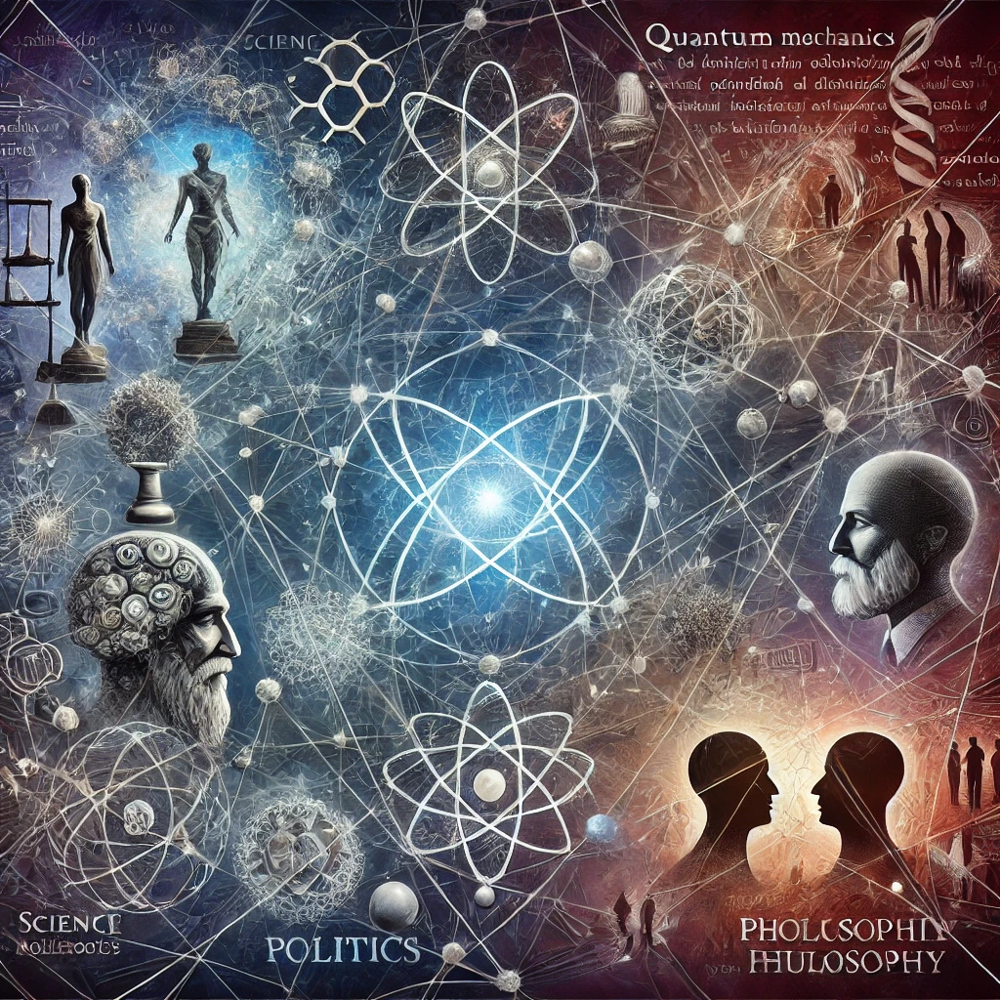

부분과 전체
목차
작가
베르너 하이젠베르크
출판일
2023년
감상평에 대한 AI그림
과학이 단순한 지식의 집합이 아니라, 세계를 이해하는 한 가지 방식이라는 점을 알 수 있었다. 그리고 나치 정권 아래에서 과학자의 역할과 도덕적 고민이 등장하는 부분이 깊은 인상을 주었으며 이때 학문,철학,윤리 등과 결코 분리될 수 없다는 점에 공감했습니다. 특히, 물리학이 인간의 사상과 어떻게 연결되는지를 느낄 수 있도록 서술된 게 인상적이었으며 이를 통해 사고의 폭을 넓히는 계기가 되었습니다.

감상평에 대한 AI평가
~~~~AI평가~~~~~
✨ 핵심 메시지 전달
과학이 단순한 지식이 아니라 세계를 이해하는 방식이라는 점을 강조한 부분이 명확합니다.
학문과 철학, 윤리의 연결성, 그리고 물리학이 인간 사상과 연관된다는 점을 잘 집어냈습니다.
✨ 개인적 깨달음과 연결
단순한 요약이 아니라, 자신의 사고의 폭이 넓어졌다는 점을 언급하며 개인적인 성찰을 포함한 점이 좋습니다.
✨ 구체적인 인상 깊은 부분 강조
나치 정권 아래에서 과학자의 도덕적 고민을 강조한 점은 책이 던지는 중요한 질문을 잘 짚었다고 볼 수 있습니다.